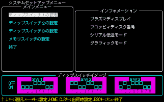

VA
基本的にエミュレーションに影響しないため、ディップスイッチの設定は不要です。 設定する必要がある場合は非公開機能を参照しDipSw_VAを設定してください。
98
PC-9801シリーズと同様のシステムセットアップメニューを内蔵しています。

この画面を呼び出すには、PC-9801シリーズと同様に HELP (End)キーを押しながらリセットしてください。
PC-88VAシリーズ同様にPCキー(Windowsアプリケーションキー)を押しながらリセットします。